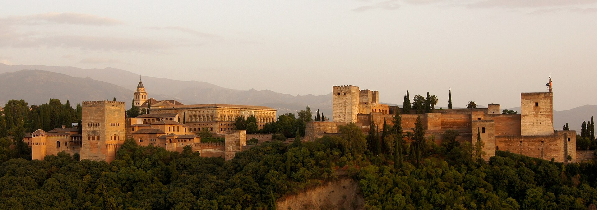

Granada and Córdoba · 5-day family itinerary
A two-base Andalusian route that gives the Alhambra room to breathe, protects the Granada–Córdoba transfer and keeps the final morning light. In Alfred, use Multi-City.

A family brief before the first booking
This illustrative route assumes two adults and one or two school-age children, moderate pace, mid-range budget and interests in architecture, food, gardens and manageable walks.
Three nights in Granada, then two in Córdoba. The rail move is a protected half-day, not an add-on after a monument visit.
One major anchor per day, a midday pause and short walkable clusters. Heat, mobility and children’s energy may change the order.
Check current Alhambra entry rules, rail schedules, access, weather, prices, cancellation terms and supplier availability before committing.
Planning boundary: opening a booking-hub link indicates intent only. It does not prove that a reservation, price or provider confirmation exists.
Route and family-coordination brief
Party: two adults and two school-age children. Illustrative duration: five days and four nights. Pace: moderate, with one anchor and one protected reset window daily. Budget: mid-range, with no prices asserted.
Base in Granada for the arrival and Alhambra sequence. Move by rail to Córdoba after breakfast on Day 4, then keep the departure morning deliberately short. The plan is designed to be edited: dates, ages, mobility, dietary needs, budget, transport and interests should be supplied in Alfred before generation.
Day 1 — Arrive in Granada and keep the first evening local
After arrival, settle near Granada’s Centro or lower Albaicín and use the late afternoon for Plaza Nueva, Carrera del Darro and a short viewpoint walk toward Mirador de San Nicolás only if the family still has energy. Choose a simple dinner in the Realejo or Plaza Nueva area rather than crossing the city.
Fallback: If arrival is delayed or the hills are too much, stay around Plaza Nueva and move the viewpoint to Day 5’s optional window. Confirm airport/rail transfer conditions and access needs on the day.
Day 2 — Give the Alhambra a full, unhurried morning
Protect the morning for the Alhambra complex, including the Nasrid Palaces only if the timed entry chosen by the family fits. Treat the Generalife gardens and the route between areas as part of the visit, then return to the base for lunch and a cool-down. Keep the evening to the lower city and a meal around Mercado de San Agustín or the Realejo.
Fallback: If the preferred timed entry is unavailable, do not stack a second major monument onto the day. Use the gardens or a shorter city walk and recheck official entry rules rather than assuming access.
Day 3 — Albaicín texture with a deliberate rest window
Start around the Granada Cathedral and Royal Chapel, then move gradually through the lower Albaicín before lunch. Keep the route to a short, named loop rather than treating the district as a single climb: Plaza de Santa Ana → Carrera del Darro → Paseo de los Tristes, with a taxi or rest stop available before the steeper lanes. Leave the afternoon open for a hotel reset or a family-friendly food stop.
Fallback: On a hot or low-energy day, keep the Cathedral/Capilla Real cluster and replace the Albaicín climb with shaded café time. Check current access, heat and any timed-entry requirement.
Day 4 — Protected rail move to Córdoba, then one historic cluster
Leave Granada after breakfast with luggage packed for the intercity rail journey to Córdoba. Treat arrival, hotel check-in and the walk from Córdoba station as the main plan until the family has reset. Late afternoon can use the Roman Bridge and riverfront at an easy pace, finishing near the Jewish Quarter rather than adding the Mezquita on transfer day.
Fallback: If the rail time or check-in runs long, keep only the Roman Bridge at sunset and move the historic interior visit to Day 5. Confirm current rail times, luggage rules and station access before booking.
Day 5 — Mezquita-Catedral early, patios and a light finish
Use the morning for the Mezquita-Catedral at the family’s confirmed entry time, then stay within Córdoba’s compact centre for the Alcázar exterior gardens or a short walk through the San Basilio patios area. Build lunch and a departure buffer into the afternoon; the route ends with a simple meal near the accommodation, not a cross-city restaurant chase.
Fallback: If access, heat or fatigue makes the second historic stop unsuitable, choose one shaded courtyard or plaza and preserve the departure buffer. Confirm current opening hours, access arrangements and onward travel before committing.
Planning notes
Dates are illustrative. Recheck current rail schedules, monument tickets, opening hours, accessibility, weather, heat, baggage rules, prices, cancellation terms and supplier availability at decision time. Keep the route editable and share it with the travelling party before booking. A booking-hub link indicates intent only; it does not prove a booking occurred.
Plan a trip
For these two bases, use Multi-City. Start with your people, dates, pace, budget and interests, then review and share the editable plan before booking.
Plan a trip